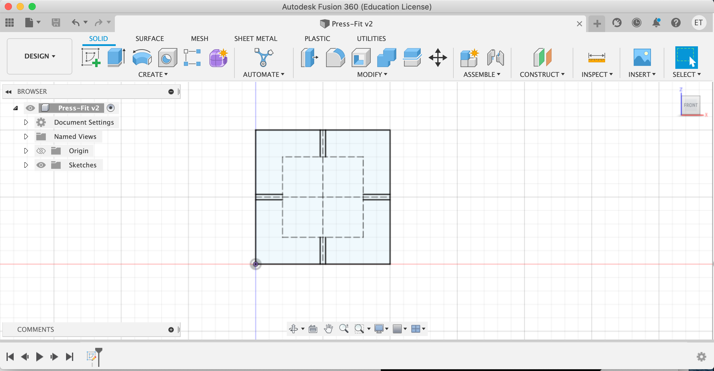
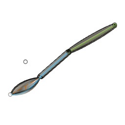

<br>
#### Week 2: 2D Design and Cutting
The assignment for this week came in three parts: the tutorials, the press-fit design, and the model of two household objects.
Number One: The Tutorials
For my tutorials, I did the one in the class page, youtube link suggestion on the main page, as well as a written tutorial.
Following the class page tutorial, I made a simple square and then designed four cutouts into the square that would be parametrized to account for cardboard width and kerf. When I went to the laser cutter I made a terrifying discovery—the design was in the wrong plane! What ever would I do? I want to Ibrahim and he said I shoudld change the plane. I tried that. And then I tried it again. It did not work. I sent the file to Ibrahim and he sent it back to me in the right plane. I believe I may have constrained the square too much to change planes easily. I do not know. And it was not the first unexplained error I would experience along my journey this week.

I printed three of these at the printer. But what else could I do?
In the next tutorial, I did not follow the exact things that the tutorial runner (tutor?) said I should, instead I used all the tools he mentioned in a kind of haphazard array. it was very freeing. I learned a lot of keyboard shortcuts, which is hard to show a picture of, but can be documented in the 30 minutes total they saved when I did not have to click on the individual icons and instead clicked letters on my keyboard to change tools throughout this project. It was thrilling.
<img src="./Screen Shot 2022-09-12 at 2.25.22 PM.png" alt="Haphazard Lines" width="250" height="300">
I thought I knew what I was doing, a little bit. But I had no idea at all how to model anything in 3D. That last part of the assignment seemed very scary. So I went into the second tutorial page link in the assignment page and skipped through them until I found one on how to build 3D models. Yay! I first made a cylinder, then I made it a bowl (or cylinder without a lid, I guess) and lastlye I added little gear nubs to the bottom and archs between them. In the process I also learned that the "centered" version of tools exist, and how to complete sketches to add new layers, and how to use the circular patters tools.
<img src="./Screen Shot 2022-09-12 at 2.31.43 PM.png" alt="View of last tutorial" width="250" height="300">
<img src="./Screen Shot 2022-09-12 at 2.42.01 PM.png" alt="View of last tutorial" width="250" height="300">
<img src=",/Screen Shot 2022-09-12 at 2.42.17 PM.png" alt="View of last tutorial" width="250" height="300">
<img src="./Screen Shot 2022-09-12 at 2.37.44 PM.png" alt="View of last tutorial" width="250" height="300">
And finally:
<img src="./_3D Tutorial.7bcae034-a196-496a-9923-fbbc0a11c699.png" alt="Final view of last tutorial" width="250" height="300">
Number Two: The Press-Fit Woodland Kit
My press-fit sculpture was designed to have two different "views" one as a hedgehog and one as a woodlouse for a cute and creepy woodland combination. I wil describe this process as creating a hedgehog then show at the end how it can be re-assembled as a woodlouse.
The concept was to have a body base that wouod lie paralell to the ground. In it, would be 4 slots, two at the front ant 2 at the back that form a sort of internal rectangular pattern. Running the length of the hedgehog and inserted into these "footslots" would be two archs the length of the body at the point where the feet are. These archs would also have slots. Across the slots of both parallel archs are "spikes" that insert into the slots on both archs simultaneously. the spikes would alternate 2 spike versions and 3 spike versions of the same height, creating the illusion of back full of spikes. The spike inserted into the archs at the very front end of the body would have two holes in it. Into those holes could be inseted the head of the hedgehog. the head consists of one arched piece paralell to the ground with notches that can be inserted into the holes in the front spikes and an arched piece perpendular to it. In this perpenducular version are more slots faceing up. Into these are inserted 3 semicircles decreasing in size.
<img src="./Screen Shot 2022-09-12 at 11.53.07 PM.png" alt="Hedgehog" width="250" height="300">
Step one: The Body
I wanted the body to be tapered, to give the effect of having a wider back end and a tighter front-end. To do this, I made 2 circles of different sized then connected them with tangent lines. After that, I deleted the internal parts of the circles, turning the body base into an oblong shape curved at the end. My next step was to make slots for the feet. While accounting for kerf and carboard size, I also wanted them to be 10mm long, a little longer than my normal slots would be, and I wanted them to be very short, and extend not much further past the cardboard. I centered these along the back ends of the diameters of each circle that was embedded in the body.
<img src="./Screen Shot 2022-09-09 at 8.11.30 PM.png" alt="Body Before Slots" width="250" height="300">
Step 2: The Archs
I placed 9 of my standard-size slots in the archs the length of the body at the pont where the feet were, equally spaced with respect to the tapered edges which were too thin to place slots. then, I added feet at the bottom equally spaced to the feet slots in the body.
<img src="./Screen Shot 2022-09-10 at 1.16.15 PM.png" alt="Putting Slots in Arch" width="250" height="300">
Step 3: The Spikes
I made each spike set (the twos and the threes) as wide at the base as the hedgehog body at its widest point. From there I used the conic curve feature and midpoints of constuction lines to evenly place the spikes on a rectangulat base. In the base, I added slots as far apart as the arched were. I printed 4 of each, then in one pf the two-spike versions I added two slot holes the height of a piece of cardboard.
Step 3: The Head
To make the part of the head that inserts into the spike I used the conic curve function to make the nose 30 mm long and a line to make it as wide as the spikes. It has nubs cut out on the ends to fit into the spikes, and a slot that goes halfway through its length. In the slot goes another arch that is also 30mm long with a slot halfway down its length, so the two can have their bases both up against the last front spike. Into this next arch are cut 3 slots equally apart. In each is a semicircle with a slot in it, except the last one, where the slot in the nose is too thin to share a slot, but can hold an unslotted semiciecle of cardboard just fine.
<img src="./creen Shot 2022-09-12 at 1.43.47 PM.png" alt="Head Pieces" width="250" height="300">
WOODLOUSE:
If you remove the semicircles on the head and the two-spiked sets along the "back of the hedgehog" then flip the set over, you have a woodlouse!
<img src="./Screen Shot 2022-09-12 at 11.52.28 PM.png" alt="Woodlouse View" width="250" height="300">
Number 3: 3D Modeling of USBc Adapter and Spoon
For my first 3D printing adventure, I decided to model the USBc adapter attached to my computer. In order to do this I measured the diemnsions of the large part of the adapter as a rectangle. I entered those diemsions into a centered rectangle in fusion. then I used the 3 point arch tool to curve the shorter end of my rectangle on fusion and connect it to either long side of the usb adapter. After that, I constrained the unattached ends of the 3 point arch to the long sides of my usb adapter. I mirrored my arch to the other short side of the adapter model over a construction line through the middle of the now-curved rectangle. I extruded this shape to the same height as the usbc adapter.
In my next sketch, I created a model of the slot for the usb. I measured the depth of the usb slot, and its width and length. I made it into a rectangle on the bottom plane view of the previous shape using the width and lengther. When etruding it, I extruded it to the positive depth of the usb slot using the "cut" extruding function.
<img src="./Screen Shot 2022-09-12 at 6.58.55 PM.png" alt="Model with UBS Slot" width="250" height="300">
Finally, I needed to make the top bit of the usb adapter—the part that actually fits into the usb. I modled this as an empty eliptical cylinder in the top view of the model. I measured its length and width as viewed from the top, and its depth as the total heighth of the adapter minus the height of the larger, darker piece the usb plugs into. Using the width and length, I used the same 3-point arch strategy as for the main body of the adapter earlier. I then made a -1mm concentric version of the shape. When extruding I pulled the ring out to the heighth of the inserted end of the ubsc adapter.
<img src="./_usbc adapter.801bcfee-dd11-4739-8d01-be33d3765dd5.png" alt="Model with USBC plan" width="250" height="300">
<img src="./Screen Shot 2022-09-12 at 7.10.44 PM.png" alt="Model with USBC Pulled" width="250" height="300">
Secondly, I wanted to design a spoon. This would prove a little complex.
To make the handle of the spoon, I sketched an elipse a a little longer than the handle of the spoon, and the same width as the spoon handle. I then severed off the ends of the elipse with symetrically-constrained lines to immitate the curved body and cornered ends of the spoon. I did this all in the top view and extruded it to the heighth of the plastic handle.
Next, I needed to make the part of the spoon that bends down from the handle into the bowl-part of the spoon. To do this, I measured roughly the height and lengthe over which this piece drops to get to the topmost part of the bowl-part of the spoon. Then I made a paralellegram connecting them to each other and the spoon handle. I did this in the right view. Somehow, it separated itself from the plane. PK, who was helping me conceptialize the spoon in office hours, helped me redefine this part of the spoon in one of the given planes. I do not know why this happened. Anyway, I extruded it symetrically to the width of the handle of the spoon so they would meet.
Lastly, I made the bowl-part of the spoon. In the right-view, I used a construction line that extended out from the handle-connection as far as the bowl-part of the spoon does, and at this lines' midpoint I made a construction line extending as far downward as the bowl-part of the spoon dips. I then made a 3-point arch between the endge of the handle connection, the lowest point, and the edge of the length construction line. I then made a concentric arch 1mm within the original arch (the width of the original spoons' plasic). I connected these lines so they did not cross the construction line on the farthest end and created a new line between the bowl and the handle connection so that connection-part of the bowl-concentric archs would be separate. I rotated the repaining parts of the concentric archs -180 degrees. I then symetrically extruded the connection between the bowl and the handle connection to the width of the handle connection.

I do not think I ended up getting the dimensions right, and if I was more accurate I would have found a way to use the rotation extrude function to make the curvy part of the spoon and find a way to make the bowl of the spoon less shart-looking.